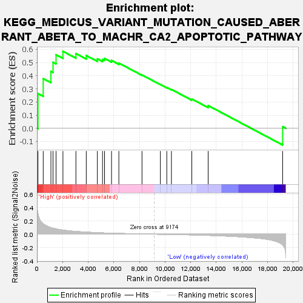
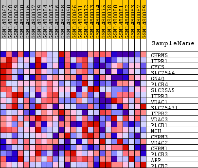
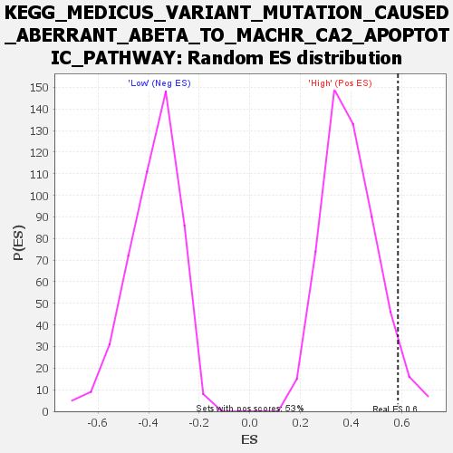

| Dataset | WG6v3.MRPL3.cls#High_versus_Low.MRPL3.cls#High_versus_Low_repos |
| Phenotype | MRPL3.cls#High_versus_Low_repos |
| Upregulated in class | High |
| GeneSet | KEGG_MEDICUS_VARIANT_MUTATION_CAUSED_ABERRANT_ABETA_TO_MACHR_CA2_APOPTOTIC_PATHWAY |
| Enrichment Score (ES) | 0.58473516 |
| Normalized Enrichment Score (NES) | 1.4859027 |
| Nominal p-value | 0.049056605 |
| FDR q-value | 0.57267314 |
| FWER p-Value | 0.999 |

| SYMBOL | TITLE | RANK IN GENE LIST | RANK METRIC SCORE | RUNNING ES | CORE ENRICHMENT | |
|---|---|---|---|---|---|---|
| 1 | CHRM5 | CHRM5 | 79 | 0.306 | 0.2638 | Yes |
| 2 | ITPR1 | ITPR1 | 488 | 0.154 | 0.3775 | Yes |
| 3 | CYCS | CYCS | 1090 | 0.098 | 0.4323 | Yes |
| 4 | SLC25A4 | SLC25A4 | 1254 | 0.089 | 0.5019 | Yes |
| 5 | GNAQ | GNAQ | 1490 | 0.079 | 0.5591 | Yes |
| 6 | PLCB4 | PLCB4 | 2028 | 0.061 | 0.5847 | Yes |
| 7 | SLC25A5 | SLC25A5 | 3040 | 0.040 | 0.5680 | No |
| 8 | ITPR3 | ITPR3 | 3850 | 0.030 | 0.5529 | No |
| 9 | VDAC1 | VDAC1 | 4715 | 0.022 | 0.5276 | No |
| 10 | SLC25A31 | SLC25A31 | 5120 | 0.019 | 0.5233 | No |
| 11 | ITPR2 | ITPR2 | 5277 | 0.018 | 0.5307 | No |
| 12 | VDAC3 | VDAC3 | 5821 | 0.014 | 0.5153 | No |
| 13 | PLCB1 | PLCB1 | 6393 | 0.011 | 0.4955 | No |
| 14 | MCU | MCU | 8200 | 0.003 | 0.4055 | No |
| 15 | CHRM3 | CHRM3 | 9635 | -0.002 | 0.3329 | No |
| 16 | VDAC2 | VDAC2 | 10136 | -0.003 | 0.3101 | No |
| 17 | CHRM1 | CHRM1 | 10499 | -0.005 | 0.2954 | No |
| 18 | PLCB3 | PLCB3 | 12090 | -0.011 | 0.2230 | No |
| 19 | APP | APP | 13366 | -0.018 | 0.1729 | No |
| 20 | PLCB2 | PLCB2 | 19183 | -0.159 | 0.0123 | No |

